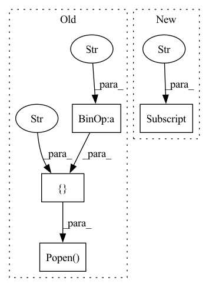

Pattern ID :28841
Before Change
address = hostname
if hostname in found: return
if "ec2" in hostname:
s = subprocess.Popen([ "ssh",
"-i" , os.path.expanduser(os.path.join(fabfile.env.SECRETS_PATH,
"keys/ec2.pem")),
address, "%s %s" % (command, path), stdout=subprocess.PIPE)
else:
s = subprocess.Popen(["ssh", "-l", NEWSBLUR_USERNAME,
"-i", os.path.expanduser(os.path.join(fabfile.env.SECRETS_PATH,
"keys/newsblur.key")),After Change
elif isinstance(hostname, tuple):
hostname, address = hostname[0], hostname[1]
else:
address = hosts["_meta"] ["hostvars"][hostname]["ansible_host"]
print(" ---> Following %s %s" % (hostname, address))
if hostname in found: return
s = subprocess.Popen(["ssh", "-l", NEWSBLUR_USERNAME, In pattern: SUPERPATTERN
Frequency: 3
Non-data size: 4
Instances Fragment ID: 84828078
Project Name: samuelclay/NewsBlur
Commit Name: b64f06c269690db9fd71886b3332cd1f3c90ef5d
Time: 2021-03-03
Author: samuel@ofbrooklyn.com
File Name: utils/tlnb.py
M Class Name: AnonimousClass
N Class Name: AnonimousClass
M Method Name: follow_host(6)
N Method Name: follow_host(5)
M Parent Class:
N Parent Class:
M File Name: utils/tlnb.py
N File Name: utils/tlnb.py
M Start Line: 66
M End Line: 84
N Start Line: 68
N End Line: 82
Before Change
def process_checkpoint(in_file):
tmp_file = in_file + ".tmp"
subprocess.Popen(["cp" , in_file, tmp_file)
sha = subprocess.check_output(["sha256sum", tmp_file]).decode()
out_file = in_file
if out_file.endswith(".pth"):
out_file = out_file[:-4]After Change
checkpoint = torch.load(in_file, map_location="cpu")
// remove optimizer for smaller file size
if "optimizer" in checkpoint:
del checkpoint["optimizer"]
// if it is necessary to remove some sensitive data in checkpoint["meta"],
// add the code here.
if torch.__version__ >= "1.6":
torch.save(checkpoint, out_file, _use_new_zipfile_serialization=False) Fragment ID: 84828091
Project Name: westlake-ai/openmixup
Commit Name: cb7ae3bae6ffe76f12f0c307e16325e7952f4274
Time: 2023-02-26
Author: 1070535169@qq.com
File Name: tools/model_converters/publish_model.py
M Class Name: AnonimousClass
N Class Name: AnonimousClass
M Method Name: process_checkpoint(3)
N Method Name: process_checkpoint(1)
M Parent Class:
N Parent Class:
M File Name: tools/model_converters/publish_model.py
N File Name: tools/model_converters/publish_model.py
M Start Line: 13
M End Line: 24
N Start Line: 24
N End Line: 45
Before Change
def process_checkpoint(in_file):
tmp_file = in_file + ".tmp"
subprocess.Popen(["cp" , in_file, tmp_file)
sha = subprocess.check_output(["sha256sum", tmp_file]).decode()
out_file = in_file
if out_file.endswith(".pth"):
out_file = out_file[:-4]After Change
checkpoint = torch.load(in_file, map_location="cpu")
// remove optimizer for smaller file size
if "optimizer" in checkpoint:
del checkpoint["optimizer"]
// if it is necessary to remove some sensitive data in checkpoint["meta"],
// add the code here.
if torch.__version__ >= "1.6":
torch.save(checkpoint, out_file, _use_new_zipfile_serialization=False) Fragment ID: 84828086
Project Name: westlake-ai/openbioseq
Commit Name: f678533fb9c8c5320abdd86ba57bd50d6357835f
Time: 2023-03-05
Author: 1070535169@qq.com
File Name: tools/model_converters/publish_model.py
M Class Name: AnonimousClass
N Class Name: AnonimousClass
M Method Name: process_checkpoint(3)
N Method Name: process_checkpoint(1)
M Parent Class:
N Parent Class:
M File Name: tools/model_converters/publish_model.py
N File Name: tools/model_converters/publish_model.py
M Start Line: 13
M End Line: 24
N Start Line: 24
N End Line: 45